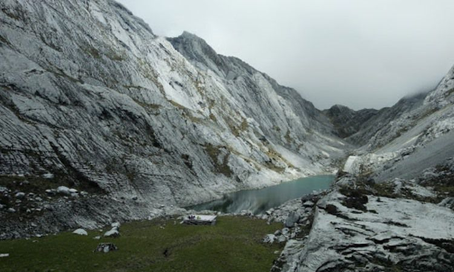
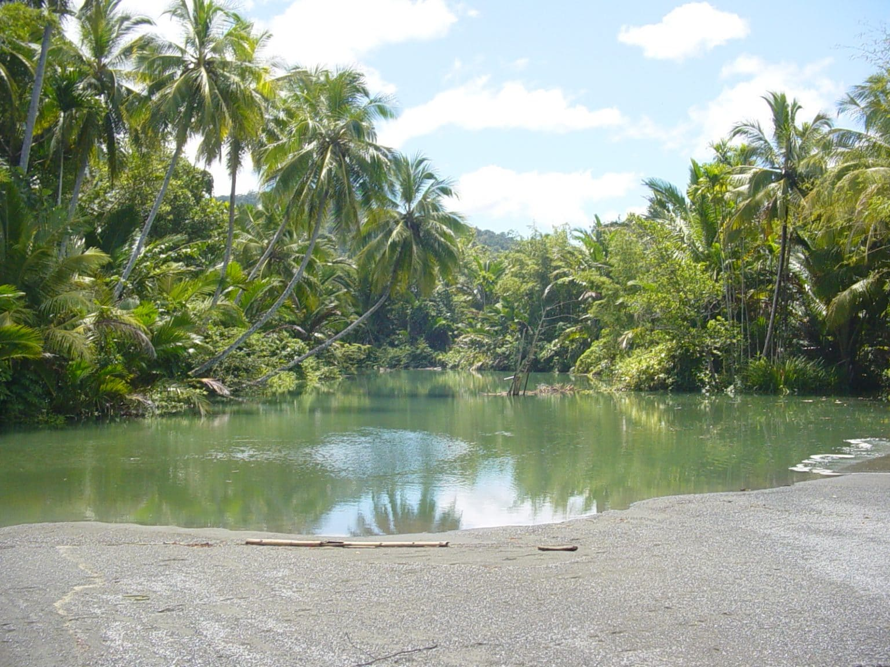

Keindahan danau ini harus Anda tempuh dengan berjalan kaki selama dua jam. Danau yang berada di kawasan gunung Jayawijaya ini memiliki pesona yang luar biasa. Degan ketinggian 4.313 mdpl Anda bisa merasakan keindahan yang magis di danau ini. Selain keindahan danaunya, di sekitar danau ini dikelilingi dengan tebing batu berwarna putih. Penampakan alam indah ini memuat Anda tersihir dan tak ingin beranjak pulang dari tempat ini.
Pantai ini merupakan salah satu lokasi dengan kisah bersejarah yang dahulunya menjadi tempat base camp bagi pasukan perang dunia II oleh sekutu. Pantai ini sangat bersih dan aman, karena sudah dijaga dan dikelola dengan baik oleh warga sekitar. Selain keindahannya di sekitar pantai ini Anda dapat menyewa saung sebagai tempat istirahat. Ada juga warung makan yang akan memberikan Anda makanan khas Papua di sekitar pantai ini.
Pantai Amai adalah objek wisata alam yang cukup terkenal di Papua. Keadaan pantainya landai, berpasir putih dan dikelilingi pepohonan hijau yang menambah nilai keindahan di pantai ini. Pantai Amai juga dihiasi dengan muara sungai air tawar yang jernih di ujung pantai dan merupakan area pantai yang mempertemukan air tawar dan air laut. Berbagai aktifitas bisa kita lakukan di pantai ini, seperti berjemur, berenang, berperahu dan masih banyak yang lainnya. Jika kita merasa kelelahan, kita bisa beristirahat di pondok-pondok yang banyak berdiri disekitar pantai. Pantai Amai berada di pesisir utara Kabupaten Jayapura, terletak pada sebuah teluk di selatan Tanjung Tanahmerah. Posisinya tepat di balik Gunung Cyclop yang hijau berselimut hutan hujan tropis. Dari pusat kota Jayapura, pantai Amai berjarak sekitar 80 kilometer, bisa kita tempuh selama kurang lebih 2 jam perjalanan dengan menggunakan mobil.
Bukit cantik ini diberikan nama bukit Jokowi ketika Presiden Jokowi mulai memantau perkembangan tempat wisata ini pada tahun 2014 lalu. Bukit ini awalnya memiliki nama bukit skyline. Dari atas ketinggian bukit ini, dimana Anda akan dapat menikmati keindahan pulau Papua. Menikmati matahari terbenam dan masih banyak lagi spot foto yang menarik di bukit ini.
Tugu ini disebut juga dengan tugu penghormatan yang diberikan kepada jendral Douglas MacArthur. Tempat tugu ini juga tersedia sebuah museum yang menyimpan kisah-kisah bersejarah. Tugu ini memiliki tinggi sekitar kurang lebih 3 meter. Berwarna kuning dan putih. Tugu ini menjadi simbol bersejarah di Papua.
Pulau ini berada di sekitar Teluk Cendrawasih. Di Pulau Biak ini Anda bisa mendatangi kampug Amoi yang merupakan salah satu destinasi wisata di pulau ini. Selain itu di pulau Biak ini juga terdapat taman anggrek dengan bermacam jenisnya. Ada penangkaran Burung yang memiliki banyak koleksi. Selain itu di pulau kecil ini juga menyimpan aneka flora dan fauna yang langka. Seperti contoh yaitu adanya kantung semar yang mampu menangkap tikus.